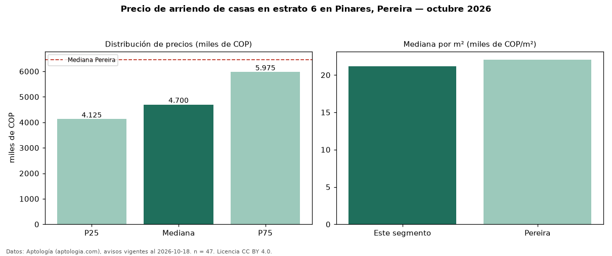

Precio de arriendo de casas en estrato 6 en Pinares, Pereira — octubre 2026
COP 4,70 millones al mes es el canon mediano de casas en estrato 6 en arriendo en Pinares, Pereira (n = 47 avisos). Eso es 41 % más que la mediana de toda la vivienda de estrato 6 de Pinares (COP 3,33 millones, n = 404); este segmento reúne el 12 % de esos avisos. Por metro cuadrado, la mediana es COP 21.157/m² al mes (n = 47), 38 % por debajo del conjunto de referencia (COP 33.949/m²). El área mediana anunciada es 225 m². El segmento con más oferta es el de 3 o más habitaciones (46 avisos, mediana COP 4,72 millones). La administración mediana declarada es COP 700.000 al mes (n = 27), aparte del canon. La mediana de todas las casas en arriendo de Pereira es COP 6,46 millones (−27 % de diferencia). La mitad central de los avisos va de COP 4,12 millones a COP 5,97 millones (razón 1,4), una dispersión moderada. Datos: Aptología (aptologia.com), CC BY 4.0 — https://www.aptologia.com/casas-en-arriendo/pereira/pinares. Archivos: PDF, CSV con las cifras y gráfica PNG.

| Avisos únicos | 47 |
|---|---|
| Percentil 25 | COP 4.125.000 |
| Mediana | COP 4.700.000 |
| Percentil 75 | COP 5.975.000 |
| Mediana por m² | COP 21.157 |
Fuente: avisos vigentes de portales inmobiliarios recopilados por Aptología, deduplicados (mínimo 30 avisos únicos por celda). Precios pedidos, no cerrados. Fecha: 2026-10-18.